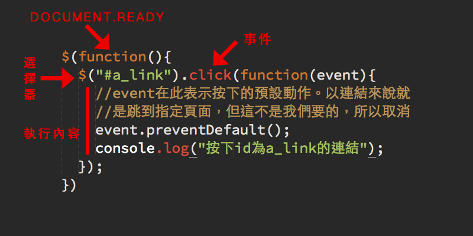

台中前端社群
Taichung Frontend Group
jQuery教學
以jQuery運用在表單上為例
社團核心團隊與助教介紹
- 黃竹藝 (Chuyi)
- Cash Wu
- 賴建凱(鬼才凱)
- Flora Hsu (桃花)
- Wilson
- Raymond
什麼是jQuery?
JS的函式庫，簡化HTML與JavaScript之間的操作。
== OK，知道這個就夠了 ==
今日流程(120 mins)
| 需求介紹與DEMO: | 5 mins |
| 下載/安裝jQuery: | 10 mins |
| 環境與HTML建構: | 5 mins |
| js基本語法 針對本次教學的部份: | 10 mins |
| jQ基本語法與選擇器: | 10 mins |
| 休息與Social: | 15 mins |
| 取得資料與列印結果: | 10mins |
| 了解Events: | 10 mins |
| 實際操作DEMO: | 10 mins |
| 現場操作: | 30 mins |
| Q & A | 預告下次活動 |
本Workshop目標
- 使用console模式查找節點(node)
- 學習如何使用選擇器(selector)
- 了解jQuery事件(events)
- 以最基礎的方式學習，如果您已經會了，請協助旁邊的夥伴
需求：購物車的結帳系統
- 改變商品數量時能夠改變小計金額
- 小計金額改變時總金額也能夠改變
- 按下移除鈕時商品從列表中刪除，同時改變總金額
- 勾選同訂購人的方塊，能夠將資料轉到收件人
- 按下"確認訂單"後跳出成功訊息
DEMO成品
下載/安裝jQuery
- 版本的不同: V1.11與V2.1的主要差別 IE8 must die!
- 壓縮production與未壓縮development的不同
- 下載掛在本機與CDN的不同 開發時使用本機
- 在head裡面還是在body尾部? 頁面顯示優先
請還未下載的夥伴開始下載
jQuery下載頁面: http://jquery.com/download/
環境與HTML建構
- html碼: http://goo.gl/Ybbx1X
- 安裝jQuery: 採用1.11的production版，放置於body結束前
js基本語法: 針對本次教學
- 宣告變數
- 邏輯判斷
- 加減乘除
- function
宣告變數
- 使用關鍵字var: 例如var price, qty...
- 數字不可在前。例如: name99與99name
- 命名的慣例: price, itemPrice
- 切記別取x,y或abc123之類意義不明的名稱
邏輯判斷
- true與false
- 使用if (true or false) {...}
- 使用 else if {...} 與 else {...}
加減乘除
- + - * / %
- 數字加數字=數字: 3 + 5 = 8
- 文字加數字=文字: "3" + 3 = "33"
- 文字(數字)減數字=數字: "3" - 1 = 2
- 文字(文字)減文字=NaN
- Console範例
Function 函數
- 將重複使用的程式碼獨立出來
- 使用關鍵字function，將程式碼放在{...}
- function abc() {...}
- var abc = function() {...} 與上一行相同
- 使用方式: abc(arg) //arg為參數
jQuery語法簡介 (10 mins)
- 如何判斷jQuery已經載入?(demo)
- jQuery 與 $
- document.ready 或 $()
- jQuery的基本語法
- 選擇器的使用
- 設定(set)與取得(get)
jQuery基本語法
選擇器的使用
- css選擇器: tag名稱, id = #, class = .
- 以$(...)包裝成jQuery物件
- 條件選擇: eq(), nth-child(), :not(), first(), last()
- 節點轉換: parents(), children(), find(), closet()...
- 太多了!參考jQuery API: selectors
設定與取得
- 取得標籤內容: text()
- 取得input資料: val()
- 設定標籤內容: text('我是內容')
- 設定input資料: val('我是資料')
- text(), val()與html()的不同
休息時間...
取得資料與列印結果
- 命令列模式下的console.log()
- 以取得第二個tr的第三個td內容為例
- 以取得第二個tr的下拉數量為例
了解Events
- 使用者與DOM的互動
- 例如:滑鼠按下, 欄位改變, 鍵盤按下, 視窗大小改變...
- demo會用到的: change, click, submit
- 參考: http://api.jquery.com/category/events
實際操作DEMO
- 設定需要取得與設定的selectors
- 改變商品數量時能夠改變小計金額
- 小計金額改變時總金額也能夠改變
- 按下移除鈕時商品從列表中刪除，同時改變總金額
- 勾選同訂購人的方塊，能夠將資料轉到收件人
- 按下"確認訂單"後跳出成功訊息
實際動手操作
- 進階1: 購買人或收件人資料空白時跳警告
- 進階2: 全部移除(清空購物車)時跳警告
Thank You
請填寫問卷: http://goo.gl/PLxlkn